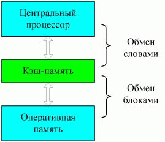
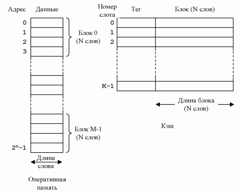
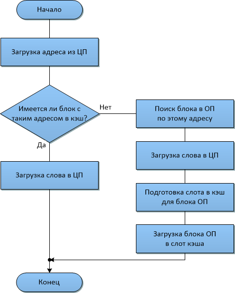
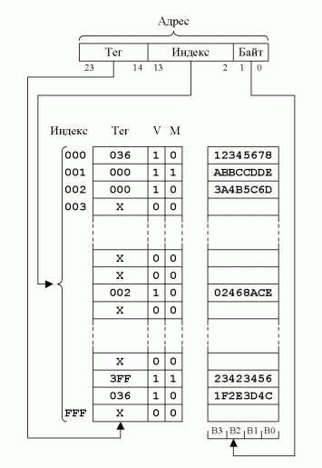
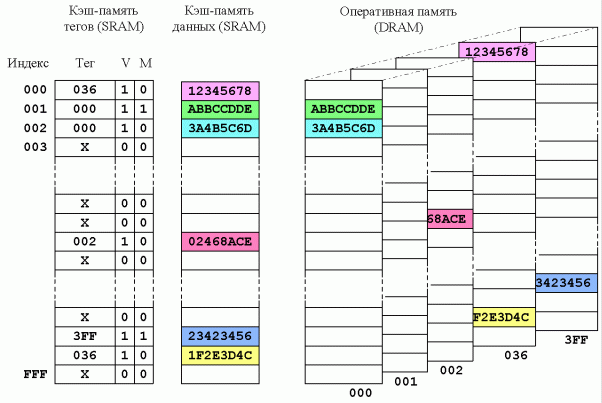
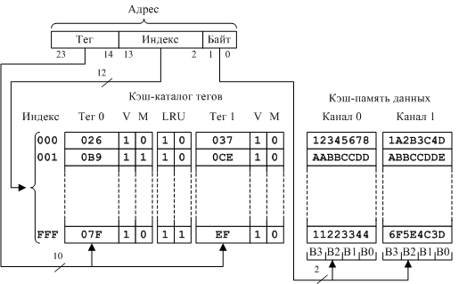

Изучение способов построения иерархической структуры памяти компьютеров и одной из составляющих иерархии памяти - архитектуры кэш-памяти. При выполнении работы следует обратить особое внимание на принципы структурной и логической организации кэш прямого отображения, ассоциативного кэш и наборно-ассоциативного.
Студенты должны изучить информационную часть работы, выяснить причины использования кэш-памяти, как одной из структурных единиц иерархической архитектуры памяти современных компьютеров. После этого необходимо изучить методы структурной и логической организации трех типов кэш: прямого отображения, ассоциативного и наборно-ассоциативного. Для каждого типа кэш следует определить преимущества и недостатки. Так как способ замещения строк кэш в случае промаха является одной из важных характеристик, следует обратить внимание на применяемые алгоритмы замещения и их характеристики.
При выполнении второй части работы ("Моделирование") следует обратить внимание на адресацию сетов и тэгов. Учитывая, что в каждой строке (line) сета размещается блок ОП емкостью 32 байта, то адресация сетов выполняется в соответствии с таблицей 6.1.
| Номер сета | Начальные адреса блоков ОП |
|---|---|
| 0 | 0, 4096, 8192,12288, ... |
| 1 | 32, 4128, 8224, 12320, ... |
| ... | |
| 127 | 4064, 8160, 12256, 16352, ... |
Исследование функционирования кэш-памяти выполняется в следующем порядке:
1. Составить таблицу начальных адресов (A1...A6) шести блоков ОП, относящихся к заданному сету. Номер сета указывается преподавателем.
2. Заполнить четыре строки рабочего сета, выполняя последовательно операцию чтения ОП по адресам A1, A2, A3, A4. Для этого следует выбрать режим Read, а в окне 32-bit address RAM набрать адрес блока ОП и нажать кнопку RUN. Эту процедуру следует повторить для остальных трех строк соответствующего сета.
3. Проверить правильность работы бита модификации М. Для этого по одному из адресов A1...A3 записать данные в ОП. Проверить значение бита М.
4. Проверить работу алгоритма замещения LRU. Для рабочего сета необходимо выполнить процедуру записи данных по адресу A5, а затем процедуру чтения по адресу A6.
Последовательность действий по пунктам 2-4 необходимо представить в виде таблицы 6.2.
| Шаг | № линии | Адрес | Тег | Данные | Бит М | Биты В2В1В0 | Режим (Зп или Чт) |
|---|---|---|---|---|---|---|---|
| 1 | 0 | 0000 | 00000 | 337E63ED2502EA043D2797E231AE20DD7EC6705C3432B36D2F4E52BCAD7F5D7F | 0 | 101 | Чт |
| 2 | 1 | 4096 | 00001 | 5CDF6B3A83A1C2BF4A3BB4A7E3C0E02FCCC52BA8D40F1FD93392168C75BE793F | 0 | 100 | Чт |
| 3 | 2 | 8192 | 00002 | 1F510895616A1C1BD575C97B9E15D558155DAFEA3DDD31F9E853A8B6932B8C9E | 0 | 010 | Чт |
| 4 | 3 | 12288 | 00003 | 6016AE6748137C6BAD3D82C28338FB5DA3C4122E1120149B94066D1C25FB3883 | 0 | 000 | Чт |
| 5 | 1 | 4096 | 00001 | 6016AE6748137C6BAD3D82C28338FB5DA3C4122E1120149B94066D1C25FB3883 | 1 | 100 | Зп |
| 6 | 2 | 16384 | 00004 | 6016AE6748137C6BAD3D82C28338FB5DA3C4122E1120149B94066D1C25FB3883 | 1 | 010 | Зп |
| 7 | 0 | 20480 | 00005 | 3B6D62B0EEC6AEA939B7E0A2FEAEFE7D02697B83D3C8612A565936612A8334AA | 0 | 111 | Чт |
Отчет по работе должен содержать: цель работы, краткую классификацию кэш-памяти, схему логической организации наборно-ассоциативного кэша (рисунок 6.6), таблицу адресов заданного сета, описание работы бита модификации, таблицу 6.2 и ее анализ, выводы по работе.
Кэш память предназначена, чтобы повысить быстродействие памяти, приблизить ее к тактам самых быстрых блоков памяти, и в то же самое время обеспечить размер памяти большей емкости, а по цене приблизить ее к менее дорогим типам полупроводниковых блоков памяти. Концепция иллюстрируется на рисунке 6.1 . Имеется относительно большая и медленная ОП вместе с меньшей, более быстрой кэш-памятью.
Кэш содержит копию частей оперативной памяти. Когда ЦП пытается читать слово из памяти, делается проверка, находится ли это слово в кэше. Если да, слово поступает в ЦП. В противном случае, блок оперативной памяти, состоящий из некоторого фиксированного числа слов, читается в кэш и затем слово поступает в ЦП. Из-за явления местоположения ссылки, когда блок данных выбран в кэш, чтобы удовлетворить одиночное обращение к памяти, вероятно, что будущие обращения будут к другим словам в блоке.

Рисунок 6.1 - Взаимодействие системы "Кэш-ОП"
Рисунок 6.2 описывает структуру системы кэш/ОП. Оперативная память состоит из 2n адресуемых слов. Каждое слово имеет уникальный n-битный адрес. Для отображения цели, эта память рассматривается, как состоящая из ряда блоков фиксированной длины по N слов каждый. То есть, имеется М = 2n/N блоков. Кэш состоит из K слотов по C слов каждый. Число слотов, или линий значительно меньше, чем число блоков оперативной памяти (K << M).
В любое время некоторое подмножество блоков памяти постоянно находится в слотах кэша. Если слово читается из блока ОП, то такой блок перемещается в один из слотов кэша. Так как количество блоков больше, чем слотов, индивидуальный слот не может уникально и постоянно выделяться отдельному блоку. Таким образом, каждый слот включает специальную метку (tag), которая идентифицирует блок, находящийся в текущее время в кэше. Tэг обычно представляет часть адреса оперативной памяти.

Рисунок 6.2 - Логическая организация системы "Кэш-ОП"
Рисунок 6.3 иллюстрирует операцию чтения. ЦП генерирует в RA адрес слова, которое следует прочитать. Если слово содержится в кэше, оно поступает в ЦП. Иначе, блок, содержащий это слово, загружается в кэш и слово передается ЦП.
Рассмотрим некоторые основные элементы проектированя архитектуры кэш-памяти.
Первый параметр кэша - его размер. Нам хотелось, чтобы бы размер кэша был не слишком большим, а средняя стоимость бита информации была соизмерима со стоимостью бита оперативной памяти. При этом, полное среднее время доступа было близко к времени доступа кэша. Имеются несколько других доводов в сторону уменьшения размера кэша.
С другой стороны, чем больший кэш, тем большее число логических элементов входит в схему адресации кэша. Результат был выбран компромиссным. Кэши стали строить большими, но немного медленнее, чем маленькие — даже когда применяется та же самая технология интегральных схем. Кроме того, их стали размещать в чипе на одной плате с ЦП. Размер кэша также ограничен доступным чипом и областью платы. Ряд исследований показали, что оптимальные размеры кэша должны быть между 1КБ и 512КБ. Невозможно достигнуть "оптимального" размера кэша, потому что эффективность кэша очень чувствительна к характеру рабочей нагрузки,

Рисунок 6.3 - Алгоритм обращения к кэшу
Так как количество строк кэша меньше, чем блоков ОП, необходим алгоритм для отображения блоков оперативной памяти в строки кэша. Далее, необходимы средства для определения, какой блок оперативной памяти в настоящее время занимает строку кэша. Выбор функции отображения зависит от способа организации кэш. Применяются три метода построения кэш: прямого отображения, ассоциативный и наборно-ассоциативный. Мы исследуем каждый из них. Для каждого случая мы рассмотрим общую структуру, а также пример. Для всех трех случаев пример включает следующие элементы:
При прямом отображении каждый блок оперативной памяти может быть размещен только в одну возможную строку кэша. Рисунок 2.4 иллюстрирует общий механизм. Отображение выражено как
i = J mod m,
где i = номер строки кэша;
j = номер блока оперативной памяти;
m = число строк в кэше.

Рисунок 6.4 - Структурная схема кэша прямого отображения
Функция отображения легко выполнима, используя адрес. С целью доступа в кэш, адрес ОП может рассматриваться как состоящий из трех полей.
Самые младшие w бит идентифицируют уникальное слово или байт внутри блока ОП. В наиболее современных машинах адресация выполняется на уровне байта. Следующие s бит определяет один из 2s блоков ОП. Логика кэша интерпретирует эти s бит как tag (s - r) бит (старшая часть) и поле строки r бит. Это последнее поле идентифицирует одну из m = 214 строк кэша. Эффект такого отображения заключается в назначении блоков ОП строкам кэша, как это показано в таблице 6.3.
| Линия в кэш | Блоки ОП |
|---|---|
| 0 | 0, m, ..., 2s - m |
| 1 | 1, m + 1, ..., 2s - m + 1 |
| ... | ... |
| m - 1 | m - 1, 2m - 1, ..., 2s - 1 |

Рисунок 6.5 - Схема логической организации кэша прямого отображения
Таким образом, использование части адреса как номер строки обеспечивает уникальное отображение каждого блока оперативной памяти в кэш. Когда блок фактически читается в предназначенную для него строку, необходим тэг данных, чтобы отличить его от других блоков, которые могут вписываться в ту строку. Старшие s - r бит служат этой цели (рисунок 6.5).
Вернемся к рисунку 6.3; операция чтения работает следующим образом. Система кэш обеспечена 26-разрядным адресом. 12-разрядный номер строки используется как индекс в кэш, чтобы обратиться к строке. Если 8-разрядный номер тэга соответствует номеру тэга, в настоящее время находящемуся в той же строке, то 5-разрядный номер слова используется, чтобы выбрать один из 32 байтов в этой строке. Иначе, 20-разрядное поле "тэг плюс строка" используется, чтобы выбрать блок из ОП. Исполнительный адрес, который использует для выборки 20-разрядный "тэг плюс строка" конкатенирует с пятью 0 битами, так, чтобы были выбраны 32 байта, начиная с блочной границы. Методика прямого отображения проста и недорога при реализации. Основной недостаток - это имеется фиксированное расположение любого блока в кэша. Таким образом, если программе приходится неоднократно обращаться к словам из двух различных блоков, которые отображаются в ту же самую строку кэша, то блоки будут непрерывно загружаться в кэш, и коэффициент попаданий будет низок.
Ассоциативный кэш преодолевает недостаток прямого отображения, разрешая загружать каждый блок оперативной памяти в любую строку кэша. В этом случае, логика управления кэшем интерпретирует адрес памяти просто как тэг и поле слова. Поле тэга уникально идентифицирует блок ОП. Чтобы определить, находится ли блок в кэше, логика управления кэшем должна одновременно проверить тэги каждой строки на соответствие.
Ассоциативное отображение обладает гибкостью, относящейся к процедуре замещения блоков. Принципиальный недостаток ассоциативного отображения - сложная схемная часть, необходимая для проверки тэгов всех строк кэша параллельно.
Наборно - ассоциативное отображение - компромисс, который позволяет устранить недостатки прямых и ассоциативных подходов отображений. В этом случае, кэш разделен на v наборов, каждый из которых состоит из k строк. Логика работы определяется:
m = v × k
i = j mod v,
где i = элемент набора кэша;
j = номер блока оперативной памяти;
m = число строк в кэше.

Рисунок 6.6 - Архитектура двухканального наборно-ассоциативного кэша
На рисунке 6.6 приведен пример наборно-ассоциативного кэша. Каждый блок оперативной памяти может быть размещен в одной линии банка А или в той же линии банка B. Такой кэш называется двухканальным наборно-ассоциативным.
Когда новый блок загружается в кэш, один из находящихся в нем блоков должен быть заменен. Для прямого отображения имеется только один возможный слот и никакой альтернативы нет. Для ассоциативного и наборно - ассоциативного кэш необходим алгоритм замещения. Чтобы достичь высокого быстродействия, такой алгоритм должен быть реализован аппаратно. Рассмотрим четыре алгоритма замещения. Вероятно, наиболее эффективный - наиболее давно используемый (Least-Recently Used - LRU).
В этом случае замещается тот блок в наборе кэша, к которому наиболее давно была ссылка. Для двухканального наборно-ассоциативного кэша это легко выполнимо. Каждый слот включает бит «обращения». Когда слот вызывается, бит «обращения» устанавливается в 1, а бит «обращения» другого слота в этом наборе устанавливается в 0.
При промахе, когда новый блок ОП должен читаться в набор, слот, чей бит «обращения» равен 0, используется для замещения. Так как мы принимаем, что ранее используемые линии кэш, вероятно, были вызваны, LRU должен дать самый лучший коэффициент попадания.
Другая возможность - First-In-First-Out (FIFO): Замещению подлежит блок в наборе, который был загружен в кэш раньше остальных. FIFO легко выполним как карусель или с использованием круговой буферной методики.
Еще одна возможность замещения блоков - наименее используемый блок (Least-Frequently Used - LFU). Заменяется тот блок в наборе, к которому было наименьшее количество ссылок. LFU мог бы быть реализован, сопоставляя счетчик с каждым слотом.
Еще одна методика выбора слота из числа кандидатов на замещение основана на использовании правила случайной выборки (random). Исследования методом моделирования показали, что случайная выборка слота на замещение обеспечивает ненамного худшую эффективность по сравнению с алгоритмом LFU.
Самая простая методика называется сквозной записью (Write-Through). При использовании этой методики все операции записи слов из ЦП выполняются как в ОП, так и в кэш, гарантируя, что данные в памяти всегда достоверны. Для любого модуля кэша ЦП может контролировать трафик и делать все, чтобы поддержать непротиворечивость внутри собственного кэша. Основной недостаток этого метода состоит в том, что в этом случае генерируется интенсивный трафик памяти, что может привести к снижению производительности.
Альтернативная методика известна как обратная запись (Write-Back) минимизирует количество записей в ОП. При обратной записи, модификации выполняются только в кэше. Когда происходит модификация, то бит модификации, связанный со слотом, устанавливается в 1. Затем, когда блок замещается, он записывается обратно в ОП только, если бит модификации установлен в 1.